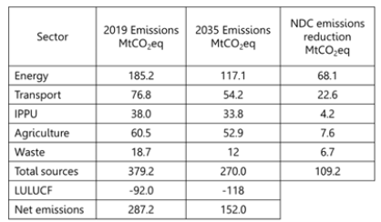

Thailand's Nationally Determined Contribution (NDC) 3.0 outlines its commitment to reducing net greenhouse gas (GHG) emissions. The reference year for emissions is 2019, with total emissions from sources at 379.2 million tCO2eq and net GHG emissions at 287.2 million tCO2eq. The Information to facilitate clarity, transparency and understanding (ICTU) of Thailand’s NDC 3.0 includes:
Target: Thailand aims to reduce its net GHG emissions to 152 million tCO2eq by 2035, representing a 47% reduction (135.2 MtCO2eq) compared to 2019 levels. This target aligns with the 1.5-degree pathways and a goal of net-zero emissions by 2050.
Implementation Period: The implementation period for this target is from January 1, 2031, to December 31, 2035, as a single-year target for 2035.
Scope and Coverage: NDC 3.0 is an economy-wide absolute GHG emissions reduction target, covering all anthropogenic emissions and removals across various IPCC sectors, including Energy, Industrial Processes and Product Use (IPPU), Agriculture, Land Use, Land Use Change and Forestry (LULUCF), and Waste. The targeted gases include carbon dioxide (CO2), methane (CH4), nitrous oxide (N2O), hydrofluorocarbons (HFCs), perfluorocarbons (PFCs), sulfur hexafluoride (SF6), and nitrogen trifluoride (NF3).
Planning Processes: Thailand developed its NDC 3.0 with domestic institutional arrangements, public participation, and engagement with local communities, including gender-responsive considerations. The outcomes of the UNFCCC's global stocktake (GST) were considered in shaping NDC 3.0, aligning it with the 1.5-degree target and net-zero by 2050. Thailand has assessed the economic and social implications of its response measures to facilitate a just transition, emphasizing stakeholder consultation, green job creation, and linkage to Sustainable Development Goals (SDGs).
Methodological Approaches: The inventory encompasses all sectors and categories, with estimations aligning with 2006 IPCC Guidelines and using the 100-year Global Warming Potentials from the IPCC Fifth Assessment Report (AR5) for quantifying emissions and removals in CO2 equivalents.
Fairness and Ambition: Thailand, despite contributing about 0.5% of global net GHG emissions in 2019, is highly vulnerable to climate change. Its NDC 3.0 demonstrates significant ambition, aligning with the principles of Common But Differentiated Responsibilities and Respective Capabilities (CBDR-RC) and equity. Thailand aims to achieve a 47% reduction in net emissions from the 2019 baseline. The country is also exploring green energy and carbon capture utilization and storage (CCS/CCUS) as solutions to mitigate GHG emissions.
Contribution to Convention Objectives: Thailand's NDC 3.0 complies with IPCC 1.5-degree pathways and contributes to stabilizing greenhouse gas concentrations in the atmosphere. It aims to reach its peaking of greenhouse gas emissions before 2030, with a trajectory towards achieving net-zero emissions by 2050.
Financial Needs: Thailand's Nationally Determined Contribution (NDC) 3.0 sets ambitious goals aligned with IPCC 1.5-degree pathways and global greenhouse gas stabilization, demanding a significant financial commitment. A primary area of investment is the energy transition, which specifically encompasses initiatives in green energy, green transportation, and green industries. This vital sector alone is projected to require substantial funding: an estimated USD 6.11 billion by 2035, without Inflation rate consideration. For other sectors including IPPU, agriculture, and waste, Thailand requires by an additional USD 0.94 billion by 2035. This brings the total estimated investment for the transition to approximately USD 7.05 billion by 2035, clearly highlighting the considerable financial resources essential for Thailand to achieve its climate objectives.
Achieving Thailand's ambitious climate targets, aligned with the 1.5-degree pathways by 2050, hinges critically on securing substantial financial resources and robust international support.
A key challenge lies in the heavy reliance on international finance ; many of Thailand's climate goals depend on external funding, underscoring the urgent need for better access to global climate finance mechanisms. Currently, Thailand faces limited access to these funds , hampered by complex application processes, administrative delays, and insufficient capacity at both national and provincial levels.
Despite these hurdles, Thailand is actively pursuing diverse domestic financing strategies , exploring public and private investment, alongside bilateral and multilateral international finance. The nation is also focused on bolstering its scientific and technical expertise and integrating climate investment into its national strategies.
A significant opportunity emerges from Article 6 of the Paris Agreement . This mechanism is crucial for channeling much-needed finance to bridge funding gaps. Thailand shows strong potential for emissions reduction across all key sectors—including Energy, Transport, Manufacturing Industries, Industrial Processes and Product Uses (IPPU), Agriculture, Forestry and Other Land Use (AFOLU), and Waste—making it a compelling candidate for these finance flows.
Crucially, the successful implementation of Thailand's NDC 3.0 hinges on substantial financial resources and robust international support.
|
1. Quantifiable information on the reference point (including, as appropriate, a base year): |
||
(a) |
Reference year(s), base year(s), reference period(s) or other starting point(s); |
2019 |
(b) |
Quantifiable information on the reference indicators, their values in the reference year(s), base year(s), reference period(s) or other starting point(s), and, as applicable, in the target year; |
The total emissions by sources in the base year (2019) amount to 379.2 million tCO2eq, based on Thailand First Biennial Transparency Report (BTR1) submitted to the Secretariat of the United Nations Framework Convention on Climate Change (UNFCCC) in December 2024, and net greenhouse gas (GHG) emissions in 2019 is 287.2 million tCO2eq. Thailand aims to reduce its net GHG emissions to 152 milliontCO2eq in 2035 from its 2019 levels, which is consistent with a reduction of 135.2 MtCO2eq or 47 percent, compared to the net emissions in 2019 level. This target has been established in line with 1.5-degree pathways of Thailand’s best efforts. |
(c) |
For strategies, plans and actions referred to in Article 4, paragraph 6, of the Paris Agreement, or policies and measures as components of nationally determined contributions where paragraph 1(b) above is not applicable, Parties to provide other relevant information; |
Not applicable. Thailand’s NDC 3.0 is an economy-wide absolute GHG emissions reduction target. |
(d) |
Target relative to the reference indicator, expressed numerically, for example in percentage or amount of reduction; |
Thailand aims to reduce its net GHG emissions to 152 milliontCO2eq in 2035 from its 2019 levels, which is consistent with a reduction of 135.2 MtCO2eq or 47 percent, compared to the net emissions in 2019 level. This target has been established in line with 1.5-degree pathways towards the achievement of net zero emissions by 2050. |
(e) |
Information on sources of data used in quantifying the reference point(s); |
The GHG emissions in the base year (2019) are based on Thailand First BTR submitted to UNFCCC in 2024. |
(f) |
Information on the circumstances under which the Party may update the values of the reference indicators; |
Thailand is stepping up its efforts in greenhouse gas inventory management, aligning with the principles of Transparency, Accuracy, Completeness, Comparability, and Consistency (TACCC). The GHG emissions in the base year (2019) are subject to updates, depending on the progress of future estimating and accounting, the revision of statistical data and annual reports, and the recalculation of the GHG inventory. |
2. Time frames and/or periods for implementation: |
||
(a) |
Time frame and/or period for implementation, including start and end date, consistent with any further relevant decision adopted by the Conference of the Parties serving as the meeting of the Parties to the Paris Agreement (CMA); |
From 1 January 2031 to 31 December 2035 |
(b) |
Whether it is a single-year or multi-year target, as applicable; |
A single-year target, 2035 |
3. Scope and Coverage: |
||
(a) |
General description of the target; |
Thailand aims to reduce its net GHG emissions to 152 million tCO2eq in 2035 from its 2019 levels, which is consistent with a reduction of 135.2 MtCO2eq or 47 percent, compared to the net emissions in 2019 level. This target has been established in line with global 1.5-degree goal, and on a pathway towards net-zero emissions by 2050. |
(b) |
Sectors, gases, categories, and pools covered by the nationally determined contribution, including, as applicable, consistent with Intergovernmental Panel on Climate Change (IPCC) guidelines; |
Thailand’s NDC 3.0 is an economy-wide absolute GHG emissions reduction target. The IPCC sectors include the following:
 Targeted gases include carbon dioxide (CO2), methane (CH4), nitrous oxide (N2O), hydrofluorocarbons (HFCs), perfluorocarbons (PFCs), sulfur hexafluoride (SF6), and nitrogen trifluoride (NF3). Inventory of these gases and tracking progress of mitigation are reported in the BTRs. |
(c) |
How the Party has taken into consideration paragraph 31(c) and (d) of decision 1/CP.21; |
Thailand’s NDC 3.0 includes all sectors of anthropogenic emissions and removals. The sources of emissions that were included in previous NDC have not been excluded while emissions and reductions from international aviation and shipping are not in the scope of this NDC. |
(d) |
Mitigation co-benefits resulting from Parties’ adaptation actions and/or economic diversification plans, including description of specific projects, measures and initiatives of Parties’ adaptation actions and/or economic diversification plans. |
Not applicable |
4. Planning Processes: |
||
(a) |
Information on the planning processes that the Party undertook to prepare its nationally determined contribution and, if available, on the Party’s implementation plans, including, as appropriate |
|
(a, i) |
Domestic institutional arrangements, public participation and engagement with local communities and indigenous peoples, in a gender-responsive manner; |
In developing its Nationally Determined Contributions (NDC), Thailand has established domestic institutional arrangements in accordance with the guidelines set by the UN Framework Convention on Climate Change (UNFCCC). The NDC process facilitates public participation and engagement with local communities through both onsite and online meetings. Thailand is working to incorporate gender perspectives, including equal participation, into its actions, aiming to increase women's involvement in policy decision- making processes related to climate change issues, aligning with sustainable development goals (SDGs). For instance, Thailand is encouraging the participation of women in councils and other bodies. One initiative ensures that half of the members of any working groups, subcommittee, and committee are women. |
(a, ii) |
Contextual matters, including, inter alia, as appropriate: |
|
|
a. National circumstances, such as geography, climate, economy, sustainable development, and poverty eradication; |
Kindly refer to Chapter 1 of Thailand's First Biennial Transparency Report (BTR1) (2024) for comprehensive information regarding the geographical, climatic, and economic conditions of Thailand. |
|
|
b. Best practices and experience related to the preparation of the nationally determined contribution; |
|
|
|
|
c. Other contextual aspirations and priorities acknowledged when joining the Paris Agreement; |
Thailand reaffirmed its commitment to addressing climate change and ensuring sustainable development. More details are available in this NDC document. |
(b) |
Specific information applicable to Parties, including regional economic integration organizations and their member States, that have reached an agreement to act jointly under Article 4, paragraph 2, of the Paris Agreement, including the Parties that agreed to act jointly and the terms of the agreement, in accordance with Article 4, paragraphs 16–18, of the Paris Agreement; |
Not applicable. |
(c) |
How the Party’s preparation of its nationally determined contribution has been informed by the outcomes of the global stocktake, in accordance with Article 4, paragraph 9, of the Paris Agreement; |
Thailand developed its NDC 3.0 based on the results of the first global stocktake (GTS) at CMA5 (decision 1/CMA.5) to keep the 1.5°C goal achievable. This framework outlines Thailand's goals for energy transition, emission reductions, adaptation strategies, and resilience. Thailand reviews GST outcomes, such as setting economy-wide emission reduction targets for all greenhouse gases (paragraph 39); tripling renewable energy capacity and doubling energy efficiency improvements by 2030; reducing coal power; transitioning away from fossil fuels; advancing zero- and low-emission technologies (paragraph 28); and shifting to sustainable lifestyles and sustainable patterns of consumption and production (paragraph 36). Thus, Thailand's NDC 3.0 sets ambitious targets aligned with the IPCC 1.5°C goal and the net zero by 2050. This target is an economy-wide emission reduction target, covering all greenhouse gases, sectors, and categories. |
(d) |
Each Party with a nationally determined contribution under Article 4 of the Paris Agreement that consists of adaptation action and/or economic diversification plans resulting in mitigation co-benefits consistent with Article 4, paragraph 7, of the Paris Agreement to submit information on: |
|
(d, i) |
How the economic and social consequences of response measures have been considered in developing the nationally determined contribution; |
Thailand has assessed the economic and social implications of its response measures to facilitate a just transition toward a low-carbon economy. It aims to minimize negative impacts while maximizing opportunities for sustainable growth, green job creation, and social inclusiveness. Stakeholder consultation: Thailand’s commitment to stakeholder consultation ensures the development of policies that are both practical and implementable. This approach ensures active participation and equitable benefit of all societal sectors in the transition, thereby fostering a resilient and diversified economy aligned with long-term sustainability objectives. In addition, Thailand recognizes the private sector's key role in sustainable growth and climate objectives. By involving enterprises in planning and maintaining stakeholder dialogue, it crafts economically sound, market-aligned policies for a low-carbon transition. Green jobs: Thailand has analyzed the job-related effects of various decarbonization measures across all sectors, examining the opportunities for green job creation in emerging green activities. Linkage to SDG: Thailand's NDC prioritizes protecting vulnerable groups—women, youth, children, and people of determination—demonstrating its commitment to diverse perspectives in climate action. The NDC 3.0 assessment of the SDGs ensures that these efforts foster social equity and strengthen resilience against climate impacts. |
(d, ii) |
Specific projects, measures and activities to be implemented to contribute to mitigation co-benefits, including information on adaptation plans that also yield mitigation co-benefits, which may cover, but are not limited to, key sectors, such as energy, resources, water resources, coastal resources, human settlements and urban planning, agriculture and forestry; and economic diversification actions, which may cover, but are not limited to, sectors such as manufacturing and industry, energy and mining, transport and communication, construction, tourism, real estate, agriculture and fisheries; |
Not applicable |
|
5. Assumptions and methodological approaches, including those for estimating and accounting for anthropogenic greenhouse gas emissions and, as appropriate, removals: |
||
(a) |
Assumptions and methodological approaches used for accounting for anthropogenic greenhouse gas emissions and removals corresponding to the Party’s nationally determined contribution, consistent with decision 1/CP.21, paragraph 31, and accounting guidance adopted by the CMA; |
Thailand’s inventory encompasses all sectors and categories, including:
- Other GHG Inventory Items The LULUCF contributions are determined using an activity-based approach represented in the GHG inventory. The targeted greenhouse gases are carbon dioxide (CO2), methane (CH4), nitrous oxide (N 2O), hydrofluorocarbons (HFCs), perfluorocarbons (PFCs), sulfur hexafluoride (SF6), and nitrogen trifluoride (NF3), achieving 100% coverage. All estimation methods align with the IPCC Guidelines and follow decision 18/CMA.1. Emissions and removals are quantified in CO2 equivalents using the 100-year Global Warming Potentials presented in the IPCC Fifth Assessment Report. |
(b) |
Assumptions and methodological approaches used for accounting for the implementation of policies and measures or strategies in the nationally determined contribution; |
Thailand will track the impact of its policies and measures through its BTRs. If required, additional impacts of specific policies will be quantified, with methodologies and assumptions clearly outlined in the BTR. |
(c) |
If applicable, information on how the Party will take into account existing methods and guidance under the Convention to account for anthropogenic emissions and removals, in accordance with Article 4, paragraph 14, of the Paris Agreement, as appropriate; |
Refer to 5(d) |
(d) |
IPCC methodologies and metrics used for estimating anthropogenic greenhouse gas emissions and removals; |
The methods for estimating GHG emissions align with the IPCC Guidelines and are based on decision 18/CMA.1. The metrics used for GHG emissions and removals are the Global Warming Potentials over a 100-year time horizon, as outlined in the IPCC Fifth Assessment Report. |
(e) |
Sector-, category- or activity-specific assumptions, methodologies and approaches consistent with IPCC guidance, as appropriate, including, as applicable; |
|
(e, i) |
Approach to addressing emissions and subsequent removals from natural disturbances on managed lands; |
Methodologies addressing emissions and subsequent removals from natural disturbances on managed lands are not applied. |
(e, ii) |
Approach used to account for emissions and removals from harvested wood products; |
Methodologies addressing emissions and subsequent removals from harvested wood products are not applied. |
(e, iii) |
Approach used to address the effects of age-class structure in forests; |
Methodologies addressing effects of age-class structure in forests are not applied. |
(f) |
Other assumptions and methodological approaches used for understanding the nationally determined contribution and, if applicable, estimating corresponding emissions and removals, including: |
|
(f, i) |
How the reference indicators, baseline(s), and/or reference level(s), including, where applicable, sector-, category- or activity-specific reference levels, are constructed, including, for example, key parameters, assumptions, definitions, methodologies, data sources and models used; |
Thailand previously published its net zero strategy in its LT-LEDS submission in 2022. In response to the GST and stakeholder consultations, Thailand’s NDC 3.0 was developed to elevate the country's 2035 ambition in line with the IPCC 1.5-degree pathways and net zero emissions by 2050. The stakeholder engagement—covering power and water, industry, transport, buildings, waste, agriculture, environment, and social sectors— helped identify national mitigation potential. The analysis uses the end-use approach from Japan’s Asia-Pacific Integrated Assessment Model (AIM) to forecast long-term, low-level greenhouse gas emissions, while its computable general equilibrium model evaluates the economic and environmental impacts of energy policies and other measures for developing LT-LEDS. The indicators for Thailand’s NDC 3.0 will be detailed in Thailand’s BTR submission in 2026. |
(f, ii) |
For Parties with nationally determined contributions that contain non-greenhouse-gas components, information on assumptions and methodological approaches used in relation to those components, as applicable; |
Not applicable |
(f, iii) |
For climate forcers included in nationally determined contributions not covered by IPCC guidelines, information on how the climate forcers are estimated; |
Not applicable |
(f, iv) |
Further technical information, as necessary; |
Not applicable |
(g) |
The intention to use voluntary cooperation under Article 6 of the Paris Agreement, if applicable. |
Thailand remains firmly committed to reducing greenhouse gas emissions primarily through domestic actions, complemented by international support to achieve its Nationally Determined Contribution (NDC) targets. As an additional pathway, Thailand is also open to utilizing voluntary cooperation under Article 6 of the Paris Agreement, particularly to unlock investments in mitigation activities that are otherwise difficult to implement and to enhance the country’s overall mitigation potential. The application of Article 6 will be guided by a strong commitment to environmental integrity and robust national criteria, in accordance with the Guidelines for the Use of Carbon Credits for International Objectives. These include project eligibility criteria, authorization and approval procedures, corresponding adjustment mechanisms, and the national carbon credit registry system. During the previous NDC period (2021–2030), Thailand engaged in cooperative approaches under Article 6.2 by signing bilateral agreements with countries such as Switzerland, Japan, and Singapore, and authorizing pilot mitigation activities potentially resulting in the transfer of internationally transferred mitigation outcomes (ITMOs). For NDC 3.0 (2031 –2035), Thailand is considering the use of ITMOs in line with future policy decisions and the established national guidelines. |
|
6. How the Party considers that its nationally determined contribution is fair and ambitious in the light of its national circumstances: |
||
(a) |
How the Party considers that its nationally determined contribution is fair and ambitious in the light of its national circumstances; |
Thailand contributed about 0.5% of global net greenhouse gas (GHG) emissions in 2019, with a GDP per capita of approximately USD 7,811. Thailand has leveraged its development momentum to actively combat the climate crisis. Although Thailand's contribution to global emissions is small, the country is disproportionately vulnerable to climate change, as demonstrated by its 30th ranking in Germanwatch's 2025 Climate Risk Index. By implementing robust mitigation and adaptation measures on both domestic and international fronts, Thailand’s NDC 3.0 is delivering tangible progress toward global climate solutions. The emissions reduction target detailed in Thailand’s NDC 3.0 is rooted in the principles of CBDR-RC and equity, which lie at the heart of both the UNFCCC and the Paris Agreement. As a Non-Annex I country with low historical contributions to global emissions, Thailand’s target reflects its economic capacity while demonstrating significant ambition in global climate action. Thailand's emissions reduction target, based on the 2019 baseline, strikes a balance between ambition and fairness, ensuring that its contributions are both impactful and realistically achievable given its national circumstances. Equity in climate targets ensures that countries with higher capacities and lower historical emissions—such as Thailand—set ambitions that align with both their ability to act and their developmental needs. In assessing its fair share, Thailand emphasizes key elements of robust climate action through a balanced approach: maximizing national ambition, safeguarding people, ecosystem, nature, lives, and livelihoods, advancing sustainable development objectives, and supporting stronger climate efforts among other developing nations. In addition to advancing conventional renewable energy (RE) and energy efficiency (EE) options, Thailand is closely monitoring the latest breakthroughs in hydrogen and nuclear technologies. The power, transport, and industry sectors account for two thirds of Thailand's national emissions. In addition to RE and EE initiatives, Thailand is exploring Carbon Capture Utilization and Storage (CCS/CCUS) as a promising solution to mitigate GHG emissions. Efforts are underway to evaluate the feasibility of CCS/CCUS projects. Even as Thailand intensifies domestic decarbonization across all sectors, its open economy and limited domestic resources make international partnerships indispensable for success. |
(b) |
Fairness considerations, including reflecting on equity; |
Although Thailand contributed about 0.5% of global net greenhouse gas (GHG) emissions in 2019, with a GDP per capita of approximately USD 7,811, it is undertaking ambitious efforts across the whole economy to achieve a 47% reduction in net emissions from the 2019 baseline. |
(c) |
How the Party has addressed Article 4, paragraph 3, of the Paris Agreement; |
Thailand’s NDC 3.0 complies with Article 4, paragraph 3 of the Paris Agreement and reinforces the nation's commitment to global efforts to maintain the 1.5-degree target. Building on its initial 2015 NDC, which emphasized sector-specific targets for clean and renewable energy under a business-as-usual approach, Thailand has advanced significantly by adopting economy-wide emission reduction targets based on 2019 baseline. This commitment is further strengthened by a strategic initiative to achieve net-zero emissions by 2050 through the transformation of all economic sectors. |
(d) |
How the Party has addressed Article 4, paragraph 4, of the Paris Agreement; |
Thailand’s NDC 3.0 is an economy-wide absolute emission reduction target, which reflects its effort as a developing country Party to address Article 4, paragraph 4, of the Paris Agreement. |
(e) |
How the Party has addressed Article 4, paragraph 6, of the Paris Agreement. |
Not applicable |
|
7. How the nationally determined contribution contributes towards achieving the objective of the Convention as set out in its Article 2: |
||
(a) |
How the nationally determined contribution contributes towards achieving the objective of the Convention as set out in its Article 2; |
Thailand’s NDC 3.0 is compliance with IPCC 1.5-degree pathways. Its efforts towards the achievement of net zero emissions by 2050 contribute to the objective of the Convention as set out in UNFCCC’s Article 2 to achieve stabilization of greenhouse gas concentrations in the atmosphere at a level that would prevent dangerous anthropogenic interference with the climate system. |
(b) |
How the nationally determined contribution contributes towards Article 2, paragraph 1(a), and Article 4, paragraph 1, of the Paris Agreement. |
Considering Thailand's national circumstances outlined in Chapter 1 of its BTR1, NDC 3.0 aligns with Article 2.1(a) to hold the increase in the global average temperature to well below 2-degree above pre-industrial levels and pursuing additional efforts to help limit temperature increase to 1.5-degree above pre-industrial levels. Thailand aims to reach its peaking of greenhouse gas emissions before 2030. This NDC sets Thailand on a trajectory toward achieving net-zero emissions by 2050. Thailand has committed to pursuing net zero emissions and its pathway is communicated in the LT-LEDS submission to the UNFCCC, which will be periodically reviewed and updated as needed. |
Sector |
Technology |
Technology Availability (Prioritized by TRL/CRI) |
Investment Cost (Million USD) |
Mitigation Potential (2030 - 2035) (MtCO2eq) |
Abatement Cost (USD/tCO2) |
|
Energy |
CCS/ CCS Hub (Offshore) |
TRL 8-9 / CRI 3 |
454.70 |
8.00 |
56.84 |
Small Modular Reactors (SMR/MMR) |
TRL 7 / CRI 2 |
25.43 |
2.00 |
12.72 |
|
|
SAF by Fischer-Tropsch (Synthetic Paraffinic Kerosene:SPK) (Long-term plan) |
TRL 8-9 / CRI 3 |
81.79 |
1.00 |
81.79 |
|
Ammonia (NH3) Co-Firing Power Plant (PPT) |
TRL 7-8 / CRI 2-3 |
250.00 |
2.00 |
125.00 |
|
SAF Alcohol to Jet (Short to Long-term plan) |
TRL 8-9 / CRI 3 |
31.35 |
0.50 |
62.70 |
|
Early Coal-firing power plant phase-out |
TRL 9 / CRI 3-4 |
66.44 |
6.00 |
11.07 |
|
H2 Co-Firing Power Plant (PTT) |
TRL 7-8 / CRI 2-3 |
112.50 |
0.50 |
225.00 |
|
Battery Energy Storage System (BESS) |
TRL 9 / CRI 5-6 |
55.69 |
Indirect mitigation: Supports grid stability |
- |
|
|
Transport |
Hydrogen Ship Cargo (Handy Size) |
TRL 6–7 / CRI 1-2 |
0.12 |
0.30 |
0.41 |
Hydrogen Truck |
TRL 8 / CRI 2-3 |
888.02 |
0.90 |
986.69 |
|
Hydrogen Ferry and Cruise Passenger |
TRL 7–8 / CRI 2-3 |
0.18 |
0.30 |
0.60 |
|
E-Trucks (80,000 units) |
TRL 9 / CRI 3 |
923.95 |
1.20 |
769.96 |
|
E-Intercity bus (5,000 units) |
TRL 9 / CRI 4 |
1,679.92 |
1.80 |
933.29 |
|
Hydrogen-powered train |
TRL 8 / CRI 2-3 |
320.39 |
0.60 |
533.99 |
|
E-Boats (2,000 boats) |
TRL 8 / CRI 2-3 |
1,218.52 |
0.90 |
1,353.91 |
|
|
IPPU |
CCS Hub in Petrochemical Industry |
TRL 7-8 / CRI 2 |
113.93 |
0.81 |
140.65 |
Carbon Capture Utilization (CCU) |
TRL 6 / CRI 1-2 |
29.52 |
0.27 |
109.34 |
|
Limestone Calcine Clay Cement (LC3) |
TRL 8-9 / CRI 2-3 |
18.33 |
0.41 |
45.25 |
|
CCS in Cement Industry |
TRL 7-8 / CRI 2 |
246.08 |
0.54 |
455.71 |
|
Refrigerant Destruction Technology |
TRL 7-8 / CRI 2 |
0.26 |
0.27 |
0.97 |
|
Refrigerants (R-600a) (R-290) |
TRL 9 / CRI 5-6 |
238.22 |
0.41 |
588.19 |
|
Sector |
Technology |
Technology Availability (Prioritized by TRL/CRI) |
Investment Cost (Million USD) |
Mitigation Potential (2030 - 2035) (MtCO2eq) |
Abatement Cost (USD/tCO2) |
|
Agriculture |
Alternative rice straw and stubble management (no burning) |
TRL 7-8 / CRI 2 |
45.00 |
707,700.00 |
34.31 |
Alternate Wetting and Drying (AWD) |
TRL 9 / CRI 4 |
20.37 |
1,790,646.00 |
5.81 |
|
Improvement of animal feed |
TRL 5-7 / CRI 2 |
44.00 |
47,068.00 |
502.80 |
|
Biochar |
TRL 8 / CRI 2-3 |
1.60 |
28,620.00 |
27.95 |
|
Site-Specific Nutrient Management |
TRL 8-9 / CRI 3 |
7.90 |
4,918.00 |
803.17 |
|
Laser Land Leveling (LLL) for Rice Field |
TRL 9 / CRI 3 |
57.86 |
Indirect mitigation: support AWD technology |
29.73 |
|
|
Waste |
Landfill Gas Capture and Utilization |
TRL 9 / CRI 4 |
55.62 |
1.00 |
55.62 |
Organic Waste Composting and Decentralized Processing |
TRL 9 / CRI 3 |
29.36 |
0.50 |
58.73 |
|
Material Recovery Facilities (MRFs) with Advanced Sorting |
TRL 9 / CRI 2-3 |
29.86 |
0.10 |
298.57 |
|
Plastic Recycling Technologies |
TRL 7-8 / CRI 2 |
||||
Total Investment Needs |
7,046.9 |
2,578,982.3 |
|||
*Disclaimer: The research, information, and figures presented herein are preliminary and intended for discussion purposes only. All data, projections, and estimates are indicative and subject to change. A comprehensive feasibility study is required to further validate, refine, and confirm these findings before any conclusions can be drawn or decisions made.
** Additional Note: The prioritization of technologies in this table is based on their Technology Readiness Level (TRL) and Commercial Readiness Index (CRI). Technology with high TRL (8–9) and mid-range CRI (3–4) are considered “technically mature but commercially emerging.” These technologies are not yet widely deployed in the market and may still require international support, pilot projects, or enabling policy frameworks. By contrast, technologies with CRI 5–6 are often commercially viable and can be domestically scaled, while CRI 1–2 technologies are not yet commercially ready.